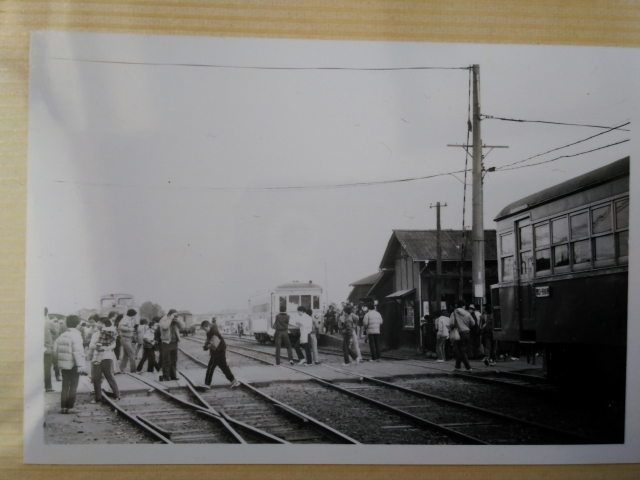

旧型のディーゼルカーが並走していて、「なんじゃこりゃ！」と、松田勇作ばりに心の中で叫びました。別府鉄道というとんで
もないローカル鉄道があると知ったのも束の間、あの５９．２ダイヤ改正でのヤード集結型輸送の廃止の影響で別府鉄道廃止の
ニュースが！高校入試前でしたが廃止２日前にようやく訪問が叶いました。
昭和５９年１月２９日（日） 別府港駅
最寄りの山陽の駅から歩いて行きました。
悲しいお知らせの看板が・・・
貨物メインの鉄道ということで、駅舎は構内の大き
さに比べて小さかったです。
得意の白黒で撮影してるので、余計に古さを感じますね。
７：４７着の１番列車がやってきました。
そうそう、これです。夜の野口駅で見たのは。
サヨナラ装飾されてました。
マニアだけでなく、地元の人も大勢訪れてました。
お目当てはこっちです。別府鉄道は２路線あって、
土山駅に行くほうがメイン路線でした。このような
当時でも古典的な客車を使った旅客列車が動いてい
ました。
８：０６発土山行き。 これに乗って土山へ向かい
ます。
土山に到着。
土山駅の国鉄側のホームより。
駅を降りて、近くの跨線橋から。
折り返し列車を激写！
多分、通常より多くつないでますね。
最後尾の車輛は、単行可能な気動車と思われます。
別府港駅に戻ってきました。
もう一方の野口に向かう路線で、高砂線接続の野口
駅へ。
ちょうど高砂線との並びが撮れました。
それにしても、渋い車内です。
折り返し、別府港へ。
先頭に陣取って撮った途中駅の写真。
阪井駅。
円長寺駅。
この写真、我ながら良い写真です。
別府港到着。

お名残乗車の人出も増えて来てます。
強烈に覚えてるのは、鉄道好きのおっさんが、５千
円ぐらいする形式集のような本を軽く買って行った
シーンです。大人はすごいなと思いました。